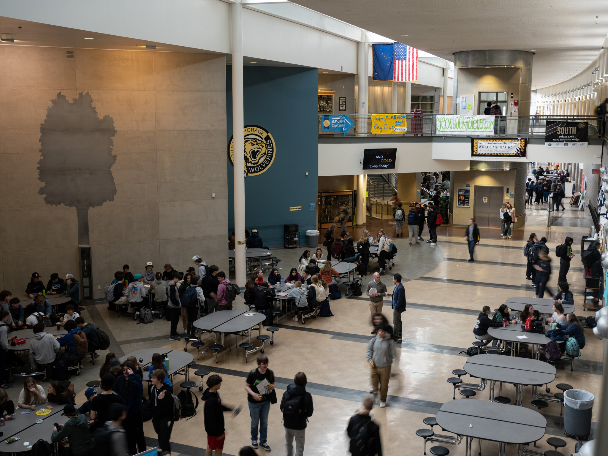

In Anchorage, affluent families set off on ski trips and other lengthy vacations, with the assumption that their children can keep up with schoolwork online.
In Anchorage, affluent families set off on ski trips and other lengthy vacations, with the assumption that their children can keep up with schoolwork online.
“ There have been days where she’s been absolutely in tears — ‘Can’t do it. Mom, I don’t want to go,’ ”
- Ms. Cooper
This Story has been reproduced as a part of coursework for the Philip Merrill College of Journalism at the University of Maryland. It was from this The New York Times Article